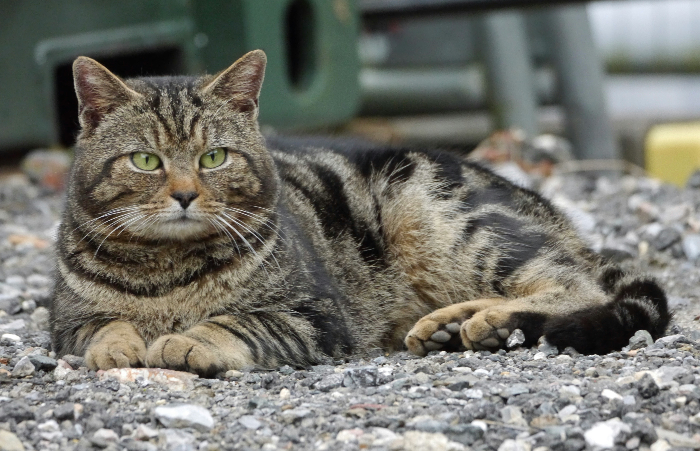
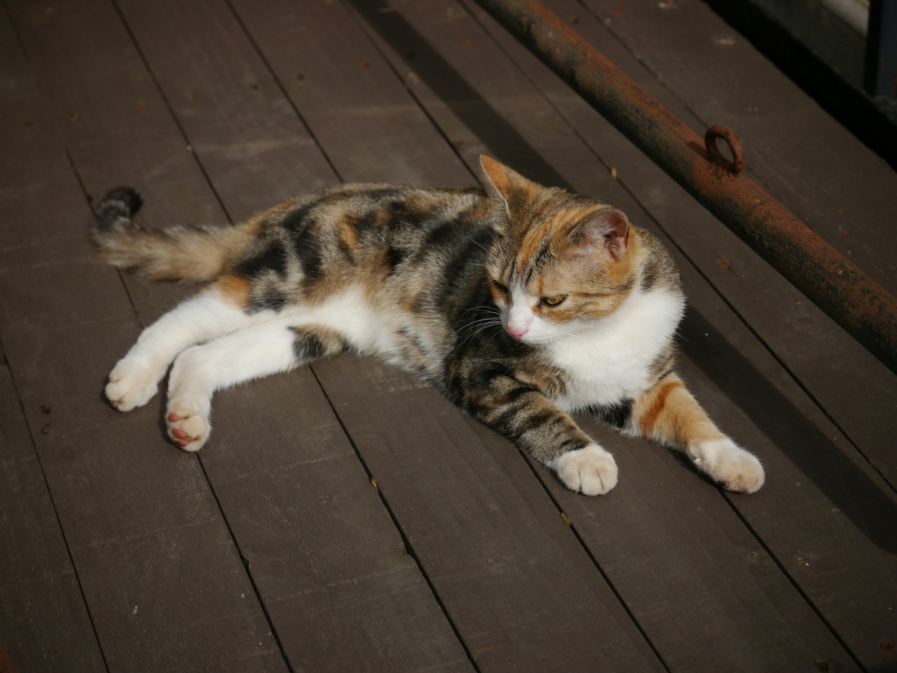

ab 14,28 €/Monat
ab 14,28 €/MonatKatzenkrankenversicherung
Umfassender Schutz bei Krankheit und Unfall deiner Katze – je nach Tarif inklusive Vorsorge und Heilmethoden.
Mehr erfahrenOb günstige OP-Absicherung oder umfassender Rundum-Schutz – sichere deine Katze mit der HanseMerkur passend zu Bedarf und Budget ab.

 ab 14,28 €/Monat
ab 14,28 €/MonatUmfassender Schutz bei Krankheit und Unfall deiner Katze – je nach Tarif inklusive Vorsorge und Heilmethoden.
Mehr erfahren ab 4,32 €/Monat
ab 4,32 €/MonatGünstige Absicherung gegen teure Operationen – inklusive Diagnostik vor der OP und kompletter Nachsorge.
Mehr erfahrenKatzen verbergen Schmerzen instinktiv lange, weshalb Erkrankungen oft spät auffallen. Typische Leiden wie chronische Nieren- oder Harnwegserkrankungen ziehen jahrelange Behandlungen nach sich, und Freigänger tragen ein erhöhtes Unfallrisiko.
Eine Katzenversicherung macht diese Kosten planbar und sorgt dafür, dass deine Katze immer die bestmögliche Versorgung erhält – von der Not-Operation bis zur langwierigen Behandlung. Gerade weil Katzen Beschwerden lange verbergen, ist eine frühzeitige Absicherung besonders wertvoll – so steht im Ernstfall die schnelle Behandlung im Vordergrund und nicht die Frage nach den Kosten.
Diese Einstiegsbeiträge gelten bei der HanseMerkur – der genaue Beitrag hängt von Rasse, Alter und Tarif ab.
Tarife, die bis zum 4-fachen GOT-Satz inklusive Notdienst erstatten, schützen auch bei teuren Notfällen vor hohen Eigenanteilen.
Sie legt fest, bis zu welcher Summe pro Jahr Kosten übernommen werden – in den Premium-plus-Tarifen ist sie unbegrenzt.
Bei Unfällen greift der Schutz sofort, allgemein gilt ein Monat. Nur einzelne besondere Erkrankungen haben längere Wartezeiten.
Typische Leiden wie Nieren-, Harnwegs- oder Zahnerkrankungen sind je nach Tarif abgesichert.
Am günstigsten und ohne Vorerkrankungs-Ausschlüsse versicherbar – der ideale Zeitpunkt für den Einstieg.
Jetzt zählt das richtige Verhältnis aus Beitrag und Leistung – je nach Freigänger oder Wohnungskatze.
Behandlungsbedarf und Kosten steigen – umfassender Schutz zahlt sich aus. Abschluss bis 8 Jahre möglich.
Draußen lauern mehr Gefahren: Unfälle, Revierkämpfe und Verletzungen sind wahrscheinlicher.
Bei uns sprichst du nicht mit wechselnden Callcenter-Mitarbeitern, sondern mit einem festen Team rund um Steven Zupp. Vom ersten Tarifvergleich über den Abschluss bis zur Kostenerstattung begleiten wir dich persönlich, verständlich und ohne Warteschleife.
Die HanseMerkur wurde mehrfach als fairer Tier-Versicherer ausgezeichnet – mit freier Tierarztwahl, Erstattung bis zum 4-fachen GOT-Satz, lebenslangem Schutz ab dem vierten Jahr und der Bedingungsupdate-Garantie.
Sag uns, ob es um Hund oder Katze geht und welcher Schutz dich interessiert – online oder in 2 Minuten am Telefon.
Wir berechnen den passenden Tarif für Rasse, Alter und Bedarf deines Tieres – verständlich erklärt, ohne Kleingedrucktes.
Du schließt direkt online ab oder mit Beratung. Danach bleibt dein fester Ansprechpartner für alles erreichbar.
Auch bei Katzen rechnen Tierärzte nach der Gebührenordnung für Tierärzte (GOT) ab, oft zum erhöhten Satz und im Notdienst mit Zuschlägen. Tarife, die bis zum 4-fachen GOT-Satz inklusive Notdienst erstatten, schützen dich auch bei teuren Behandlungen vor hohen Eigenanteilen. Beim Tarifvergleich ist der Erstattungssatz deshalb einer der wichtigsten Punkte überhaupt.
Katzen neigen zu bestimmten Leiden: chronische Niereninsuffizienz, Erkrankungen der ableitenden Harnwege, Zahn- und Zahnfleischerkrankungen sowie im Alter häufig eine Schilddrüsenüberfunktion. Viele verlaufen chronisch und müssen über Jahre behandelt werden. Bei Freigängern kommen Unfälle und Bissverletzungen hinzu. Die Krankenversicherung deckt die Behandlung dieser typischen Katzenkrankheiten ab.
Bei Unfällen gibt es keine Wartezeit, der Schutz greift sofort. Für Krankheiten gilt eine allgemeine Wartezeit von einem Monat. Nur für einzelne besondere Erkrankungen sind es 6 bis 12 Monate. Wechselst du nahtlos von einer Vorversicherung, werden bereits erfüllte Wartezeiten angerechnet, sodass deine Katze durchgehend geschützt bleibt.
Über die Selbstbeteiligung bestimmst du die Höhe deines Monatsbeitrags. Mit 250 € oder 500 € sinkt der Beitrag spürbar; ohne Selbstbeteiligung ist er höher, dafür entfällt dein Eigenanteil im Schadenfall. Bis zu einem Eintrittsalter von fünf Jahren ist bei der OP-Versicherung sogar eine Variante ganz ohne Selbstbeteiligung möglich.
Das reguläre Höchsteintrittsalter liegt bei 8 Jahren. Je früher du deine Katze versicherst, desto günstiger ist der Einstieg und desto seltener stehen Vorerkrankungen einer Aufnahme im Weg. Auch für ältere Katzen finden wir gemeinsam eine passende Lösung und stimmen Tarif und Selbstbeteiligung individuell ab.
Bei nahtlosem Übergang rechnet die HanseMerkur bereits erfüllte Wartezeiten an, sodass deine Katze durchgehend geschützt bleibt und du nicht von vorne beginnst. Wir prüfen deinen bestehenden Vertrag gemeinsam mit dir, vergleichen die Leistungen und sorgen für einen lückenlosen Übergang – damit du sofort vom besseren Schutz profitierst.
Vorsorge ist bei Katzen besonders wertvoll, weil sie Erkrankungen früh erkennt. In den Premium-Tarifen ist eine jährliche Vorsorgepauschale enthalten, etwa für Impfungen, Wurmkuren, Zahnreinigung oder das geriatrische Screening älterer Katzen. Wer Vorsorge konsequent nutzt, beugt teuren Folgebehandlungen vor und sorgt dafür, dass die Katze möglichst lange gesund bleibt.
Beide Haltungsformen sind versicherbar, tragen aber unterschiedliche Risiken. Freigänger sind häufiger von Unfällen, Bissverletzungen und Parasiten betroffen, während Wohnungskatzen eher zu chronischen Erkrankungen neigen. Den passenden Tarif stimmen wir auf die Lebenssituation deiner Katze ab, damit der Schutz genau dort greift, wo er gebraucht wird.
Viele Katzenhalter starten mit der günstigen OP-Versicherung und stocken später auf den umfassenden Schutz auf. Der ideale Zeitpunkt für den Wechsel ist, solange deine Katze noch gesund ist, da bestehende Erkrankungen die Aufnahme in die Krankenversicherung erschweren können. Wir behalten die Entwicklung gemeinsam mit dir im Blick und melden uns rechtzeitig, wenn ein Wechsel sinnvoll wird. So sicherst du dir heute den günstigen Einstieg und hältst dir den Weg zum Vollschutz jederzeit offen, ohne den richtigen Moment zu verpassen.

Keine Katze ist wie die andere – und keine Lebenssituation gleicht der anderen. Ob verspielte Wohnungskatze, neugieriger Freigänger oder ruhige Seniorin: Wir wählen gemeinsam mit dir die Bausteine aus, die wirklich zu euch passen, statt dir ein Standardpaket zu verkaufen.
Ändert sich etwas – ein Umzug, eine zweite Katze oder neue Bedürfnisse im Alter – passen wir deinen Schutz unkompliziert an. So bleibt deine Absicherung immer aktuell, und du hast für alle Fragen einen festen Ansprechpartner an deiner Seite, der dich und deine Katze kennt. So fühlt sich Versicherung nicht wie ein anonymes Produkt an, sondern wie echte Unterstützung im Alltag.
Du musst dich nicht sofort entscheiden – aber du kannst. Berechne in zwei Minuten unverbindlich deinen Beitrag oder fordere ein persönliches Angebot an. Wir melden uns mit einer klaren Empfehlung.
| Leistung | OP-SchutzKomfort | OP-SchutzPremium | OP-SchutzPremium plus | Krankenvers.Komfort | Krankenvers.Premium | Krankenvers.Premium plus |
|---|---|---|---|---|---|---|
| Allgemein | ||||||
| Jahreshöchstentschädigung für Operationen auf Grund von Krankheit oder Unfall | 2.500 EUR | 5.000 EUR | Unbegrenzt | 2.500 EUR | 5.000 EUR | Unbegrenzt |
| Jahreshöchstentschädigung für Allgemeine Behandlungen auf Grund von Krankheit oder Unfall | ✗ | ✗ | ✗ | 2.500 EUR | 5.000 EUR | Unbegrenzt |
| Erstattungshöhe von Tierarztrechnungen nach GOT¹ inkl. anfallender Notdienstgebühren | 3-facher Satz, keine Notdienstgebühr | 4-facher Satz | 4-facher Satz | 3-facher Satz, keine Notdienstgebühr | 4-facher Satz | 4-facher Satz |
| Höchsteintrittsalter für Hunde und Katzen⁴ | 8 Jahre | 8 Jahre | 8 Jahre | 8 Jahre | 8 Jahre | 8 Jahre |
| Selbstbeteiligung (SB) – Wählbare Optionen: ohne SB / 250 EUR SB / 500 EUR SB² | Mit SB optional, ohne SB bis Eintrittsalter 5 Jahre | Mit SB optional, ohne SB bis Eintrittsalter 5 Jahre | Mit SB optional, ohne SB bis Eintrittsalter 5 Jahre | Mit SB optional, ohne SB bis Eintrittsalter 5 Jahre | Mit SB optional, ohne SB bis Eintrittsalter 5 Jahre | Mit SB optional, ohne SB bis Eintrittsalter 5 Jahre |
| Freie Tierarzt- und Klinikwahl | ✓ | ✓ | ✓ | ✓ | ✓ | ✓ |
| Direkte Abrechnung mit dem Tierarzt möglich | ✓ | ✓ | ✓ | ✓ | ✓ | ✓ |
| Telemedizin | ✓ | ✓ | ✓ | ✓ | ✓ | ✓ |
| Leistungen⁵ | ||||||
| Chirurgischer Eingriff (die Haut und das darunterliegende Gewebe werden mehr als punktförmig durchtrennt) | ✓ | ✓ | ✓ | ✓ | ✓ | ✓ |
| Wundversorgung durch Nähen | ✓ | ✓ | ✓ | ✓ | ✓ | ✓ |
| Minimalinvasive Eingriffe (Operationen mit Endoskop) | ✓ | ✓ | ✓ | ✓ | ✓ | ✓ |
| Erweiterter Unfallbegriff: Verschlucken von Fremd-/Schadstoffen und Vergiftungen gelten als Unfall | ✓ | ✓ | ✓ | ✓ | ✓ | ✓ |
| Heilbehandlung (Behandlungen ohne Operation) | ✗ | ✗ | ✗ | ✓ | ✓ | ✓ |
| Diagnostik: Berücksichtigung sämtlicher Untersuchungen zur Diagnosestellung | Kosten für letzten Vorbereitungstag u. OP-Tag | Kosten für letzten Vorbereitungstag u. OP-Tag | Kosten für letzten Vorbereitungstag u. OP-Tag | ✓ | ✓ | ✓ |
| Medikamente und Verbrauchsmaterialien | 15 Tage | 30 Tage | 60 Tage | Unbegrenzt | Unbegrenzt | Unbegrenzt |
| Unterbringung in Tierklinik | 15 Tage | 30 Tage | 60 Tage | Unbegrenzt | Unbegrenzt | Unbegrenzt |
| Nachbehandlungen | 15 Tage | 30 Tage | 60 Tage | Unbegrenzt | Unbegrenzt | Unbegrenzt |
| Operationen und Heilbehandlungen bei besonderen Erkrankungen/Diagnosen (z.B. Ellbogendysplasie (ED), Hüftdysplasie (HD)) | ✗ | 5.000 EUR⁶ | Unbegrenzt | ✗ | 5.000 EUR⁶ | Unbegrenzt |
| Kastration oder Sterilisation, medizinisch indiziert | ✓ | ✓ | ✓ | ✓ | ✓ | ✓ |
| Kastration oder Sterilisation, unabhängig von medizinischer Indikation | ✗ | ✗ | Einmalig 100 EUR | ✗ | Im Rahmen der Vorsorge bis 75 EUR | Im Rahmen der Vorsorge bis 100 EUR |
| Physiotherapie, Osteopathie und Chiropraktik nach der OP | 15 Tage | 30 Tage | 60 Tage | 15 Tage, danach zusätzlich 100 EUR jährlich | 30 Tage, danach zusätzlich 250 EUR jährlich⁷ | 60 Tage, danach zusätzlich 250 EUR jährlich⁷ |
| Alternative Behandlungsmethoden, z. B. Homöopathie, Akupunktur und Lasertherapie nach der OP | ✗ | 30 Tage | 60 Tage | ✗ | 30 Tage, danach zusätzlich 250 EUR jährlich⁷ | 60 Tage, danach zusätzlich 250 EUR jährlich⁷ |
| Hilfsmittel (z.B. Orthesen, Gehstützen, Geschirr, Rollstühle, Tragevorrichtungen, Halskragen) | ✗ | 250 EUR⁶ | 250 EUR⁶ | ✗ | 250 EUR⁶ | 250 EUR⁶ |
| Prothesen und Implantate | ✗ | 500 EUR⁶ | 500 EUR⁶ | ✗ | 500 EUR⁶ | 500 EUR⁶ ⁸ |
| Goldakupunktur, Golddrahtimplantation | ✗ | ✗ | 100 EUR | ✗ | ✗ | 500 EUR⁸ |
| Einschläfern durch Injektion (bei Unfall oder Krankheit) | ✓ | ✓ | ✓ | ✓ | ✓ | ✓ |
| Vorsorgende Behandlungen | ||||||
| Vorsorge und vorbeugende Behandlungen – Jahreshöchstentschädigung | ✗ | ✗ | ✗ | ✗ | 75 EUR | 100 EUR |
| Zum Beispiel für: Schutzimpfungen, Floh- und Zeckenvorsorge, Wurmkuren, Zahnreinigung inkl. Zahnpolitur und Zahnsteinentfernung, Geriatrisches Screening, Kennzeichnung per Chip | ✗ | ✗ | ✗ | ✗ | ✓ | ✓ |
| Wartezeiten | ||||||
| Wartezeit bei Unfällen | Keine | Keine | Keine | Keine | Keine | Keine |
| Allgemeine Wartezeit | 1 Monat | 1 Monat | 1 Monat | 1 Monat | 1 Monat | 1 Monat |
| Erkrankungen/Diagnosen mit besonderer Wartezeit | Nicht versichert | 12 Monate | 6 Monate | Nicht versichert | 12 Monate | 6 Monate |
| Wartezeit für Prothesen, Implantate | Nicht versichert | 12 Monate | 12 Monate | Nicht versichert | 12 Monate | 12 Monate |
| Goldakupunktur, Golddrahtimplantation | Nicht versichert | Nicht versichert | 12 Monate | Nicht versichert | Nicht versichert | 12 Monate |
| Anrechnung Wartezeiten bei nahtloser Vorversicherung bei der HanseMerkur | ✓ | ✓ | ✓ | ✓ | ✓ | ✓ |
| Reisen | ||||||
| Schutz bei vorübergehenden Auslandsaufenthalten | 3 Monate, weltweit | 6 Monate, weltweit | 12 Monate, weltweit | 3 Monate, weltweit | 6 Monate, weltweit | 12 Monate, weltweit |
| Erstattung von Stornokosten bei Nichtantritt einer Urlaubsreise bei unfallbedingten Operationen | ✗ | 500 EUR | 1.000 EUR | ✗ | 500 EUR | 1.000 EUR |
| Kosten für medizinisch notwendigen Rücktransport aus dem Ausland bei erforderlicher Operation | ✗ | 500 EUR | 500 EUR | ✗ | 500 EUR | 500 EUR |
| Garantien | ||||||
| Stabiler Beitrag: keine Beitragserhöhungen bei steigendem Tieralter | ✓ | ✓ | ✓ | Moderate Anpassung nach dem 3., 5., 7. und 9. Geburtstag des Tieres | Moderate Anpassung nach dem 3., 5., 7. und 9. Geburtstag des Tieres | Moderate Anpassung nach dem 3., 5., 7. und 9. Geburtstag des Tieres |
| Verlängerte Widerrufsfrist 45 Tage | ✓ | ✓ | ✓ | ✓ | ✓ | ✓ |
| Tägliches Kündigungsrecht des Versicherungsnehmers ab dem 2. Versicherungsjahr | ✓ | ✓ | ✓ | ✓ | ✓ | ✓ |
| Kündigungsschutz im Schadenfall ab Versicherungsbeginn | ✓ | ✓ | ✓ | ✓ | ✓ | ✓ |
| Lebenslanger Versicherungsschutz ab dem 4. Versicherungsjahr | ✓² | ✓² | ✓² | ✓² | ✓² | ✓³ |
| Bedingungsupdate-Garantie: Künftige Leistungsverbesserungen gelten automatisch | ✓ | ✓ | ✓ | ✓ | ✓ | ✓ |
| Optionale Bausteine | ||||||
| Empfehlung – Zusatztarif Zahn u.a. Zahnextraktion, Wurzelbehandlungen, Zahnfüllungen, Zahnsatz und Korrektur von Zahn- und Kieferanomalien | ✗ | Optional | Optional | ✗ | Optional | Optional |
| Tier Assistance u.a. Unterbringung des Tieres, z.B. bei Unfall oder Krankheit des Besitzers, Vermittlung einer Tierbetreuung bei Urlaub | Optional | Optional | Optional | Optional | Optional | Optional |
| Vorsorge Plus: Erhöhung der Vorsorgepauschale auf 250 EUR jährlich, Leistungen u.a. für Tier-Verhaltenstherapie, Erstellung EU-Heimtierausweis, Diätmittel, Vitamin-/Mineralstoffpräparate | ✗ | ✗ | ✗ | ✗ | ✗ | Optional |
Für Katzen gibt es zwei Produkte: die Katzen-OP-Versicherung als günstige Absicherung gegen Operationskosten und die Katzenkrankenversicherung als umfassenden Rundum-Schutz inklusive Behandlungen, Diagnostik, Medikamenten und je nach Tarif Vorsorge.
Die OP-Versicherung ist die günstige Grundabsicherung und übernimmt gezielt teure Operationen. Die Krankenversicherung deckt zusätzlich Behandlungen ohne OP, Diagnostik, Medikamente und Vorsorge ab. Wer das volle Kostenrisiko absichern möchte, wählt die Krankenversicherung.
Die Katzen-OP-Versicherung beginnt ab 4,32 €, die Katzenkrankenversicherung ab 14,28 € im Monat. Der genaue Beitrag richtet sich nach Rasse, Alter, Haltung und Tarif.
Beide Haltungsformen sind versicherbar. Bei Freigängern ist das Unfallrisiko in der Regel höher, was je nach Tarif berücksichtigt wird. Wir finden gemeinsam den passenden Schutz für die Lebenssituation deiner Katze.
Ja, das reguläre Höchsteintrittsalter liegt bei 8 Jahren. Je früher du deine Katze versicherst, desto günstiger ist der Einstieg. Auch für ältere Katzen finden wir eine passende Lösung.
Bei Unfällen greift der Schutz sofort. Die allgemeine Wartezeit beträgt einen Monat, für einzelne besondere Erkrankungen je nach Tarif 6 bis 12 Monate. Bei nahtloser Vorversicherung werden Wartezeiten angerechnet.
Berechne in zwei Minuten deinen Beitrag oder lass dich persönlich beraten – unverbindlich und kostenlos.